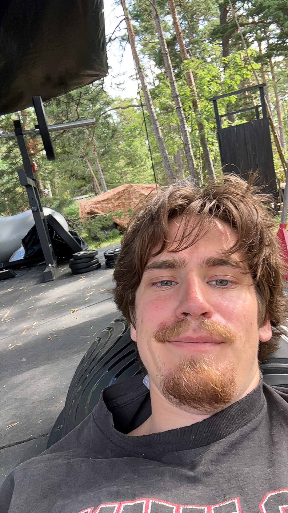
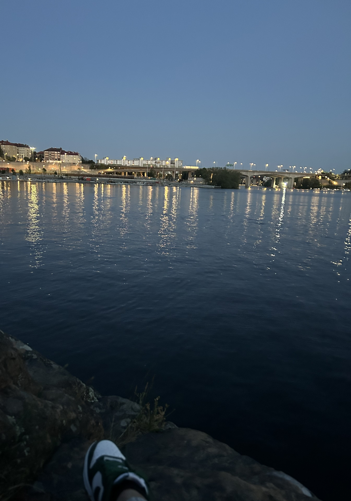
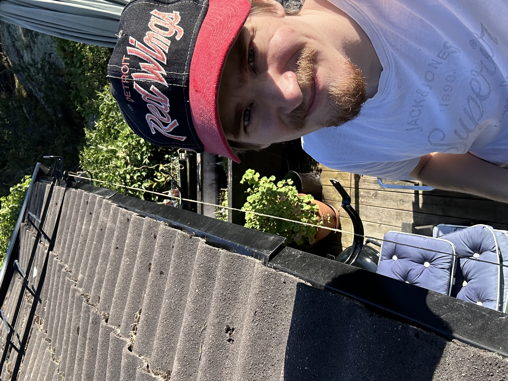
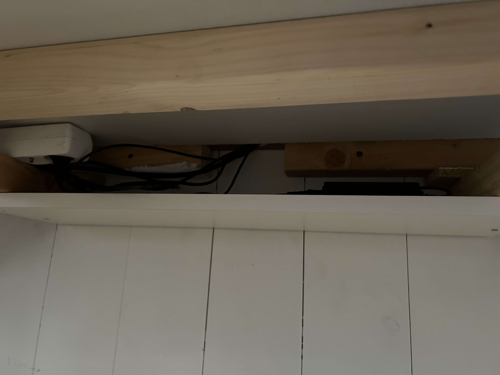

Civilingenjörsutbildning i samhällsbyggnad på KTH (år 1-2)
Flervariabelanalys – SF1626
Tillämpad statistik – SF1910
Algebra och geometri – SF1624
Hus och anläggningar – AF1002
Stadsutveckling och transportsystem – AH1030
Teknisk mekanik – SG1117
Projektledning och BIM inom samhällsbyggandet – AI1802
Samhällsbyggandets regelsystem – AI1525
Geovetenskap och geoteknik – AL1302
Naturresursteori – AL1301
GIS och mätningsteknik – AG1314
Samhällsbyggnadsekonomi – AI1128
Numeriska metoder och grundläggande programmering – SF1516
Samhällsbyggnadsprocessen – AI1527
Envariabelanalys – SF1625
Bygg och byggprojektledning – BBP (år 3)
Byggmaterial, grundkurs – AF1301
Strömningsmekanik för samhällsbyggnad – AE1601
Byggfysik – AF1402
Byggnadsmekanik, grundkurs – AF1006
Examensarbete inom samhällsbyggnad, grundnivå – AF102X
Byggkonstruktionslära, grundkurs – AF1005
Geoteknik med grundläggning – AF1601
Master – Civil and Architectural Engineering (år 4-5)
Projekt
Lista på projekt...
Småhusprojektet
Uppgift att ta fram förslag till småhus. Största del Revit och Twinmotion, även beräkningar för huset och konstruktionsritningar.
Areatröghetsmoment – Rektangel
Iy: -\nIz: -
Fritt upplagd balk – Max moment & nedböjning
Max moment: -\nMax nedböjning: -
About Me
Hej! Jag heter Nick Westin och studerar till civilingenjör i samhällsbyggnad på KTH i Stockholm. Jag är särskilt intresserad av konstruktion, programmering och problemlösning. På fritiden gillar jag att lära mig nya saker, bygga projekt och träna.
Blogg
Välkommen till bloggen! här händer lite allt möjligt!
13 aug 2025: plugg!
12 aug 2025: Rensade stranden!
7 aug 2025: utegym!

6 aug 2025: Övning med stridbåtar nedanför hela dagen + lössjutning nattetid!
5 aug 2025: Findus o rufus!
4 aug 2025: Sandhamn och middag på värdshuset!
27 juli 2025: Frukost på bryggan och in till stan!
26 juli 2025: Visit på Möja!
25 juli 2025: Lägga nät med Kevin och Farfar!
24 juli 2025: Brygghäng med drinkar o sol, dök oxå i byn efter waxholmsbåtens propeller med kevin!
22 juli 2025: Flervarremys!
21 juli 2025: Frukost på bryggan med morgondopp! + besök från Walenna II
20 juli 2025: Utegym & måla garderobsdörrar o en kvälltur!
19 juli 2025: Gin & Tonic på Farfars terrass & vietnamesiskt!
18 juli 2025: Bad vid Fredhällsklipporna!

17 juli 2025: Bad vid Pampas!
16 juli 2025: Firade Lukas 18 år i årby!
10 juli 2025: Morgonbad & hittade gamla ritningar på Farmor & Farfars hus!
9 juli 2025: Nytt Hörnskåp!
7 juli 2025: Nytt bord i årby!
5 juli 2025: Korsö Brandövning!
4 juli 2025:
3 juli 2025: Regnig förmiddag och extremt blåsig eftermiddag! Roddat med borden på gården!
2 juli 2025: Morgonbad och målat lister!
1 juli 2025: Otroligt väder! Morgonbad, Kayaktur runt ön och grillad kyckling till middag med mamma & farfar!
30 juni 2025: Åkt ut igen o fixat lite tak!

29 juni 2025: Åkt in till stan o shoppat kläder till Kevin!
28 juni 2025: Målat golvlister o fixat på Farfars tak!
27 juni 2025: Börjat hjälp farfar med Boken! Han berättar även många minnen från både han själv och farmor
26 juni 2025: Mathemleverens + Fortsatt måla Kevins rum!
25 juni 2025: Idag skjustade vi in Ida och Oskar samt åkte till Vindö byggvaror och köpte ny flagga!
24 juni 2025: Idag har jag och Kevin börjat måla om hans rum, jag har även skjutsat farfar med Korsö-Teslan :)
23 juni 2025: Idag har jag fixat kabelhål och hylla till skrivbordet, samt spacklat och bastat!

22 juni 2025: Idag har jag snickrat skrivbord med farsan!
21 juni 2025: Idag skapade jag min första hemsida! (denna) och snickrade vidare med farsan samt fick prova köra farbror Fredriks nya maskin!
PDF Merger
Slå ihop flera PDF-filer direkt i webbläsaren. Ingen fil lämnar din dator!